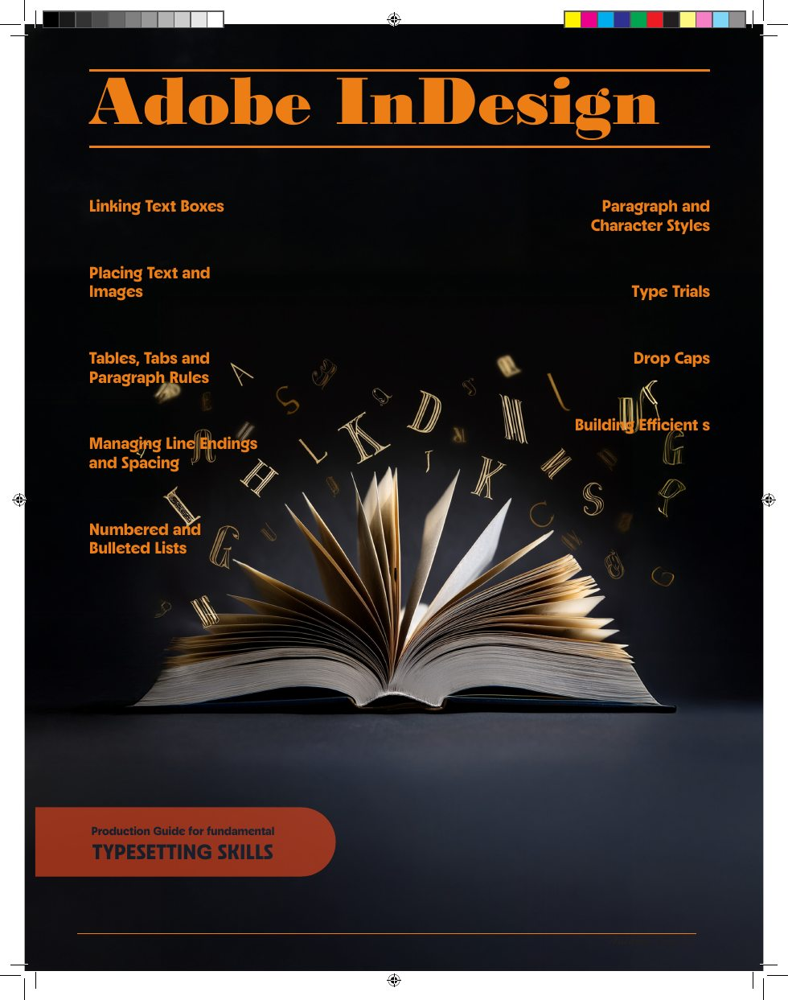
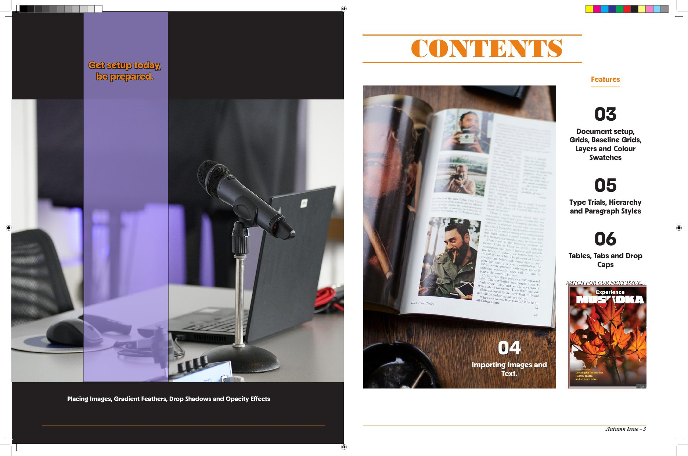
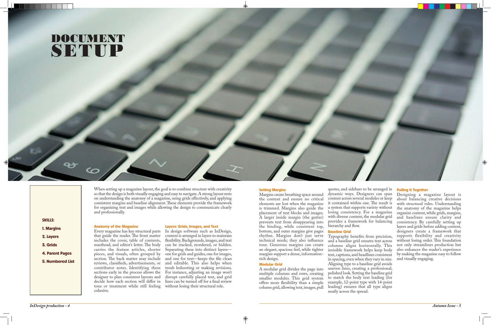
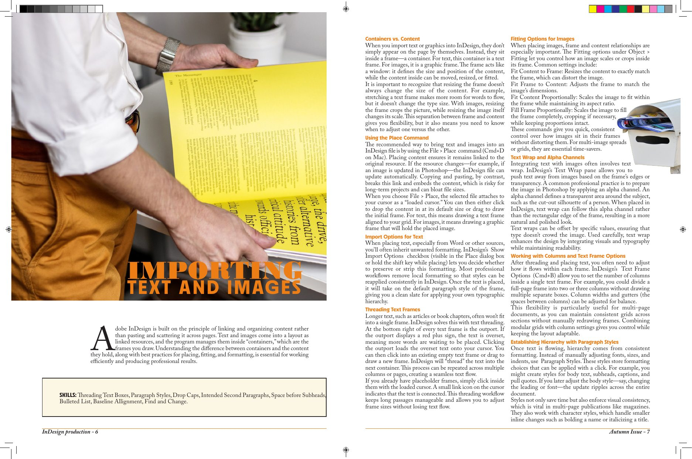
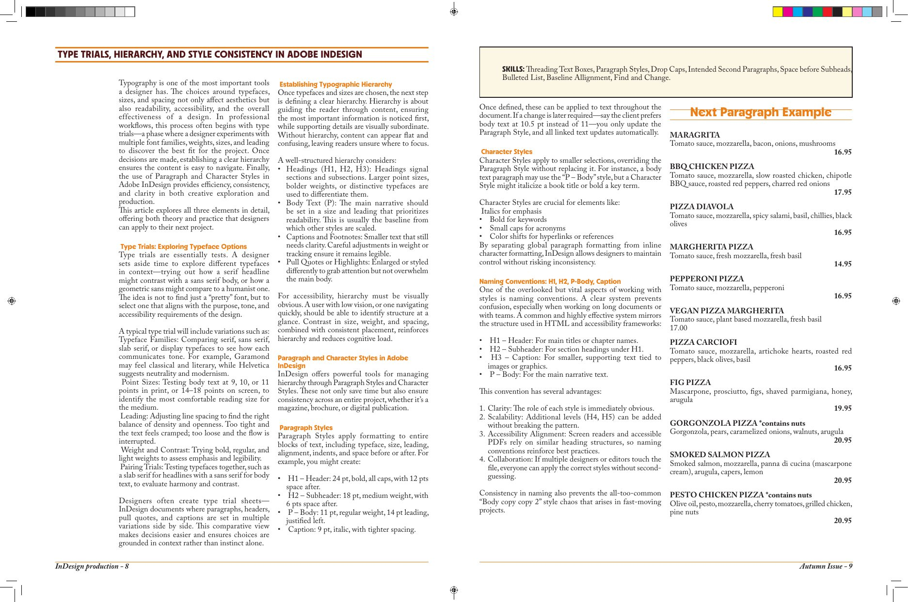
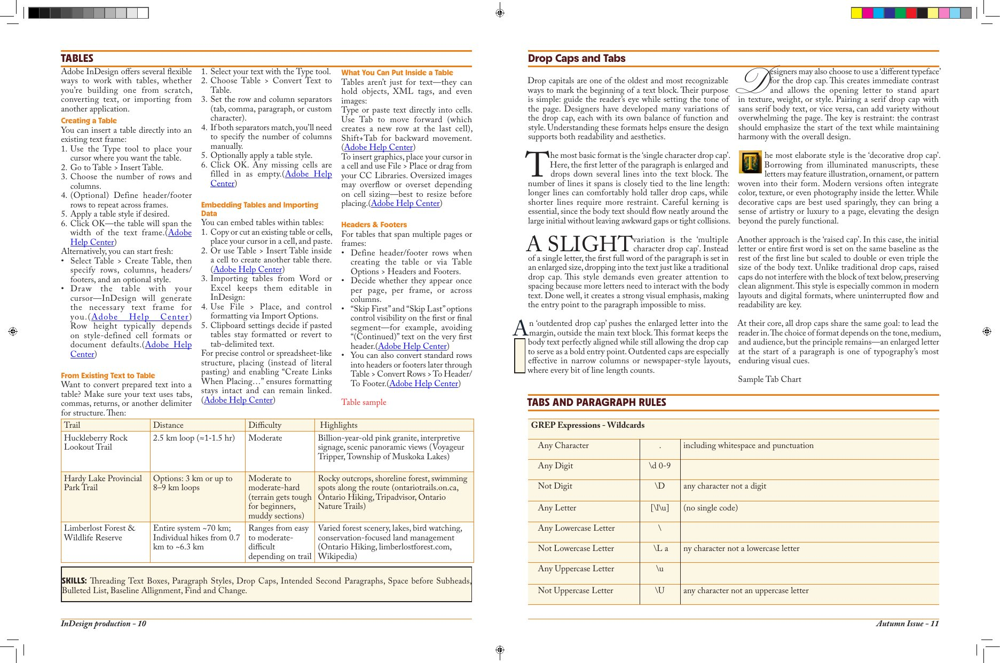
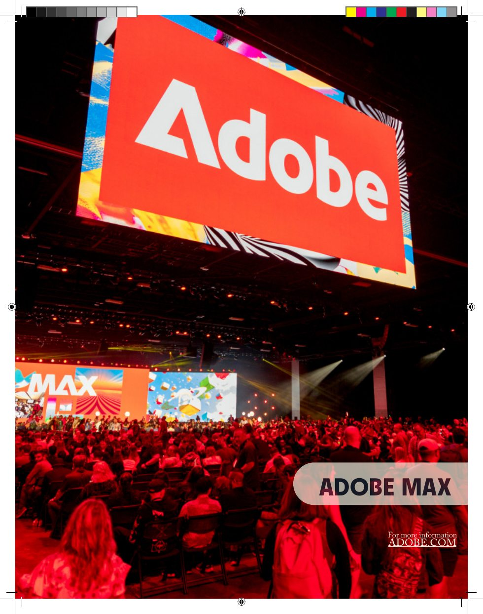

InDesign Production Guide
Fundamental Typesetting Skills
Project Brief
Adobe InDesign — Production Guide for Fundamental Typesetting Skills is a seven-page academic editorial publication presenting essential techniques for building and formatting professional documents.
The publication organizes technical topics into readable editorial spreads, combining type hierarchy, grids, images and consistent page composition.

Editorial Concept
The guide presents fundamental typesetting skills in an approachable magazine format. A contents spread introduces the topics, followed by pages that combine explanatory text, screenshots and visual examples.
Layout & Hierarchy
Headings, columns, whitespace and page structure organize technical content into an easy-to-follow sequence.
Practical Topics
Document setup, grids, baseline grids, layers, colour swatches, importing images and text, type trials, paragraph styles, tables, tabs and drop caps.
Publication Gallery
These are the actual pages from the finished publication, displayed directly on the website. Select a spread to see the artwork in full.






Production Skills
Document Construction
Page setup, linked text boxes, imported assets and alignment support consistent layouts across the publication.
Type & Finishing
Paragraph and character styles, line endings, spacing, bullets, numbering and paragraph rules demonstrate attention to typesetting details.
Outcome
A seven-page editorial guide that demonstrates document organization, visual hierarchy and practical Adobe InDesign typesetting techniques.